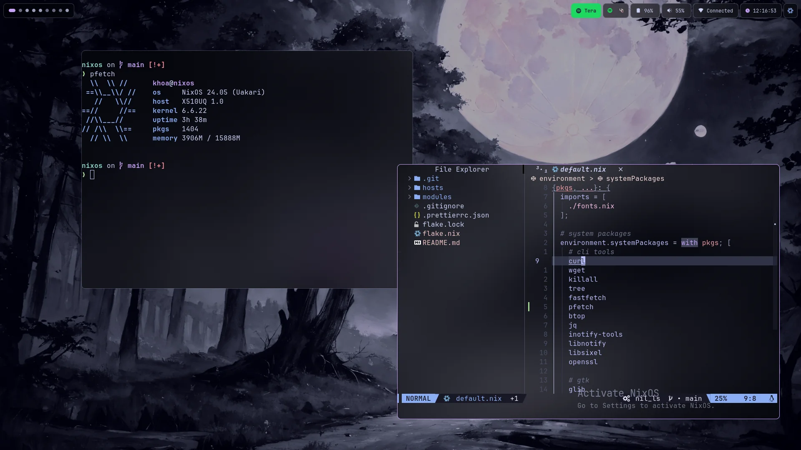
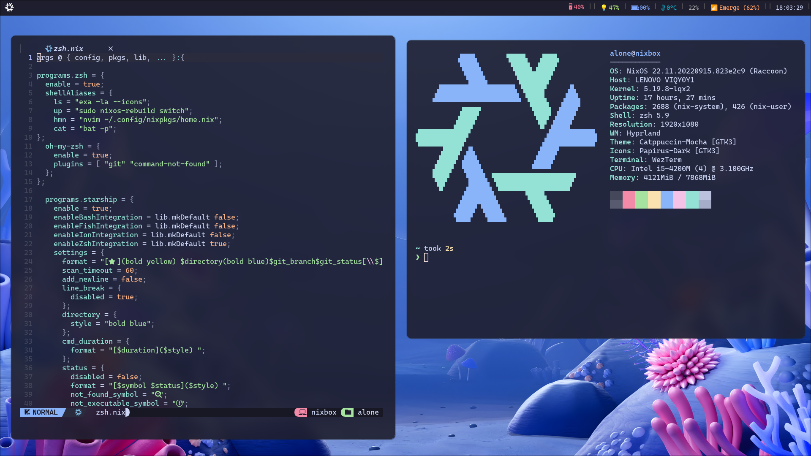

Olá me chamo Caio Cunha Neves
Descrição
Eu me chamo Caio, atualmente curso bacharelado de SI e sou analista de sistema. Atendo principalmente
mercados, pequenas mercearias e lojas de varejo. Tenho o sonho de atuar na área de desenvolvimento em qual
for a função.
Atualmente possuo habilidade e proficiência em backend(C, Python, MySQL) e um pouco de frontend(Node,
TypeScript, React e JS). Pretendo me especializar em IA e montar LLMs locais e treinar pequenos modelos de
baixo consumo computacional.
Curiosidade: Meu dedão da mão esquerda é deslocado, permitindo eu colocar ele até a lateral
do pulso :)
Hobby
Um dos meus Hobbys é mexer e me aventurar no NixOS e aprender mais sobre o OS(Linux) e a distro. Infelizmente
tive o azar de encontrar no Reddit a interface do Hyprland, que oferece acesso total a personalização do
ambiente e a usabilidade pratica no OS. Mas em desvantagem, fornece muito trabalho para que seja uma boa
opção.
Enfim, no futuro pretendo disponibilizar a minha personalização no meu GitHub.
Como Começou ?
Acabei encontrando um post no Reddit e vi um video exibindo como funciona
Por Que Esse Hobby ?
Estava tendo problemas no Win11, que sempre me trouxeram problemas com o decorrer das atualizações. Além
disso,
estava com dificuldade na matéria de Linux e tinha a vontade de aprender a utilizar CLI.
Situação Ocorrida
Eu me interessei pela usabilidade e praticidade da interface do Hyprland, e fui atras de distros do Linux que
ofereciam suporte a essa interface, até que eu encontrei o NixOS e o gerenciador de pacotes Nix.


Links Sobre o Tema: